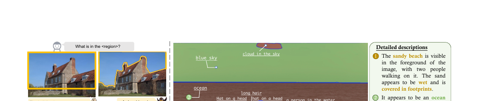
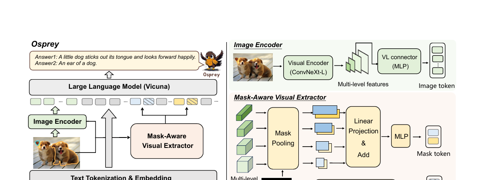
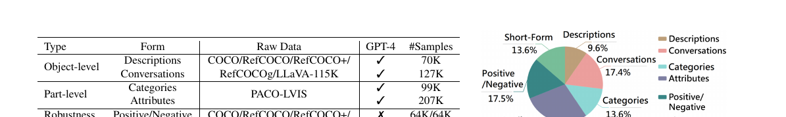

Osprey: Pixel Understanding with Visual Instruction Tuning

LISA 解决输出侧的掩码(文本→
<SEG>→SAM),Ferret 解决输入侧的自由形状区域(坐标⊕点云采样特征)。Osprey 走的是 Ferret 那条输入线,但把"区域怎么编码"换了一套:掩码 + 卷积 CLIP 多尺度 mask-pooling,把精度从"框"推到"像素"。
1. 出发点 (Motivation)
现有区域级 MLLM(Kosmos-2 / Shikra / PVIT / GPT4RoI)都用框当 referring 输入,论文指出两个硬伤:
- 框太粗,混进背景:稀疏的外接框会把无关背景特征卷进来,导致 region-text 对齐不准、推理时语义偏移(Fig. 1a:笔的框里混进"纸")。这和 Ferret 提的"手枪/刀共享同一个框"是同一类问题——框无法表达形状。
- 分辨率太低:这些模型多用 224×224 的 ViT-CLIP,密集小区域的细节根本看不清。而提分辨率又被 ViT 全局注意力的计算量卡住。
另一边,SAM 能用框/点提示切出高质量掩码,但它只会切、不会命名——给不出类别、属性、描述。于是论文盯住一个空档:
能不能让 MLLM 直接吃「掩码」作输入,既有像素级精度、又能说出语义(类别/属性/描述/推理)?
Osprey 的答案是 mask-text instruction tuning:(1) 造一份 724K 掩码-文本指令数据;(2) 设计 mask-aware visual extractor 把像素级表示注入 LLM;(3) 用卷积 CLIP 扛高分辨率。
2. 方法 (Method)

2.1 直觉:一块区域 = 「它是什么」+「它长什么形状」
Osprey 给每块输入区域生成两个 token:
- mask token
t:这块区域的语义内容——从卷积 CLIP 的多尺度特征图里,把掩码盖住的像素特征平均池化出来。回答"它是什么"。 - spatial token
s:这块区域的几何形状——把二值掩码本身展平投影。回答"它长什么样、在哪"。
为什么要分两路?池化会把"形状"抹平(只剩一个语义向量),所以单独留一路专门编码掩码的像素级位置关系。这和 Ferret 的"坐标(在哪)⊕采样特征(长啥样)"是同一种二分思想,只是 Osprey 的"长啥样"直接来自掩码本身。
2.2 卷积 CLIP:换掉 ViT 才敢上高分辨率
Osprey 把视觉编码器从 ViT-CLIP 换成卷积 CLIP(ConvNeXt-L),输入 512×512。原因:
- ViT 的全局注意力随分辨率平方增长,512 太贵;ConvNeXt 是卷积,对更大输入分辨率泛化好、又快。
- 卷积主干天然产出多尺度特征图(res2–res5),正好喂给后面的 mask-pooling 抽不同粒度的区域特征。
图像级 token 用 res4 那一级的特征;mask-aware extractor 则用 res2–res5 全部四级(下文公式 2 的 \(j=1..4\))。
2.3 Mask-Aware Visual Extractor:核心两步
第一步——多尺度 mask pooling(公式 1)。对区域 \(R_i\) 和第 \(j\) 级特征图 \(\mathbf{Z}(x)_j\),把掩码盖住的所有像素特征做平均:
—— 翻译:$\mathcal{MP}$ 就是 mask-average-pooling。把第 $j$ 级特征图里、落在掩码 $R_i$ 内的那些像素特征求平均,得到这一级上这块区域的特征向量 $V_{ij}$。说白了:用掩码当"勺子",从特征图里把这块区域的特征"舀"出来取均值。
第二步——多尺度融合成 mask token(公式 2)。每一级 \(V_{ij}\) 过一个该级专属的线性投影 \(\mathbf{P}_j\) 对齐维度,四级相加,再过一个 MLP \(\sigma\):
—— 翻译:把四个尺度(粗到细)的区域特征各自投影到同一维度后加起来,融合成一个向量,再过 MLP 适配到 LLM 的词嵌入维度,得到 mask token $t_i$。为什么要多尺度:大物体靠粗尺度(res5)抓整体语义,小部件靠细尺度(res2)抓细节,加起来兼顾。
spatial token:把掩码 \(M_i\) resize 后展平、过 MLP 投影成 \(s_i\),专门保住像素级形状。代码实现把这两路都写在 MaskExtractor 里——query_feats 是 mask token、pos_feats 是 spatial token:
repo/osprey/model/layer.py:L53-L91 — Mask-Aware Visual Extractor:多尺度 mask-pooling 求和(公式 1+2)+ 掩码展平投影(spatial token)
for i, name in enumerate(self.feature_name): # res2..res5 四级
feat = feats[name][idx].unsqueeze(0)
mask_feat_raw = self.mask_pooling(feat, mask) # 公式1:MP(R_i, Z_j)
mask_feat_flatten = mask_feat_raw.reshape(-1, mask_feat_raw.shape[-1])
if name=='res2': mask_feat = self.res2(mask_feat_flatten) # 逐级线性投影 P_j
elif name=='res3': mask_feat = self.res3(mask_feat_flatten)
elif name=='res4': mask_feat = self.res4(mask_feat_flatten)
else: mask_feat = self.res5(mask_feat_flatten)
mask_feats[i] = mask_feat.reshape(*mask_feat_raw.shape[:2], -1)[0]
mask_feats = mask_feats.sum(0) # 公式2:四级相加
mask_feats_linear = self.feat_linear(mask_feats) # σ(·) 适配 LLM 维度 → mask token
query_feats.append(mask_feats_linear)
# spatial token:掩码 resize→展平→MLP
mask = F.interpolate(mask, size=self.mask_shape, mode='bilinear', align_corners=False)
pos_feat = self.mask_linear(mask.reshape(mask.shape[1], -1))
pos_feats.append(pos_feat)
mask pooling 本身就是一行 einsum 的掩码加权平均(mask/denorm 把掩码归一化成"区域内均值"):
repo/osprey/model/layer.py:L108-L113 — MaskPooling:掩码归一化后对特征图做加权平均(即 mask-average-pooling)
mask = (mask > 0).to(mask.dtype)
denorm = mask.sum(dim=(-1, -2), keepdim=True) + 1e-8
mask_pooled_x = torch.einsum("bchw,bqhw->bqc", x, mask / denorm) # Σ(特征·掩码)/掩码面积
2.4 <region> → <mask><pos>:两个 token 塞进句子
文本里用占位符 <region> 引用一块区域(写在区域名后,如 "region1<region>"),tokenize 后被替换成两个特殊 token <mask> 和 <pos>,它们的 embedding 分别被 mask token \(t_i\) 和 spatial token \(s_i\) 写回。这是 Ferret <region_fea> 注入的镜像,只是每区域换成两个 token:
repo/osprey/model/osprey_arch.py:L177-L193 — 找到 <mask> 占位符,把 mask 特征 + spatial 特征顺次写回 embedding,并把这 2 个位置的 label 置为 IGNORE
mask_idx = torch.nonzero(cur_input_ids==self.tokenizer.convert_tokens_to_ids(['<mask>'])[0])
for i, idx in enumerate(mask_idx):
cur_raw_new_input_embeds = self.get_model().embed_tokens(cur_input_ids[_l:idx[0]])
cur_new_input_embeds.append(cur_raw_new_input_embeds)
cur_new_input_embeds.append(mask_feats[batch_idx][i:i+1]...) # <mask> ← mask token t_i
cur_new_input_embeds.append(pos_feats[batch_idx][i:i+1]...) # <pos> ← spatial token s_i
if labels is not None:
cur_labels[idx[0]:idx[0]+2] = IGNORE_INDEX # 这两个注入位不计 loss
_l = idx[0]+2
注意
cur_labels[idx:idx+2] = IGNORE_INDEX:<mask>和<pos>是输入注入位,不参与 next-token 预测的 loss——和 Ferret 的<region_fea>一样,它们是 condition,不是生成目标。
2.5 三阶段训练
- Stage 1 图文对齐:只训 image-level projector(MLP connector),冻结卷积 CLIP + LLM,用 LLaVA 过滤的 CC3M。
- Stage 2 掩码-文本对齐:加入 Mask-Aware Visual Extractor,训它把掩码特征对齐到语言嵌入;数据是 COCO/RefCOCO/Pascal-Part/PartImageNet 转的指令。
- Stage 3 端到端微调:固定视觉编码器,放开 projector + extractor + LLM,用 Osprey-724K + VG + VCR(VG 没掩码,用 HQ-SAM 拿框提示生成高质量掩码补上)。
2.6 Osprey-724K 数据集

三个亮点(都喂进 Stage 3):
- 对象级 + 部件级:用 GPT-4 把框 + 短描述扩成区域级详细描述/对话(对象级 197K),用 PACO-LVIS 的 456 个部件类 + 55 种属性造部件级 QA(306K)。
- 负样本挖掘(抗幻觉):空间感知(找空间上最近的混淆类)+ 类别感知(用 SentenceBERT 取语义最相似的 top-8 里随机选一个当负类),问"这块是不是 X"答 Yes/No,正负各 64K。
- 短答指令(抗过拟合):在问题尾部显式加"用一个词/短语回答",避免模型被短答数据带偏成只会蹦短词。
3. 结论 (Key findings)
① 开放词表分割识别,大幅领先(Table 2)。 用 GT 掩码作输入、句子输出再算与词表的语义相似度。Cityscapes 上 Osprey-7B PQ 50.64 / AP 29.17 / mIoU 49.78,对比掩码级 Ferret-7B(35.57 / 26.94 / 38.40)和框级 GPT4RoI(34.70 / 21.93 / 36.73)——PQ 比 Ferret 高 +15.07。
② 部件级分类碾压(Table 3)。 指代对象分类,语义相似度 SS / 语义 IoU:
| 数据集 | 指标 | GPT4RoI | Ferret-7B | Osprey-7B |
|---|---|---|---|---|
| LVIS(对象级) | SS / S-IoU | 51.32 / 11.99 | 63.78 / 36.57 | 65.24 / 38.19 |
| PACO(部件级) | SS / S-IoU | 48.04 / 12.08 | 58.68 / 25.96 | 73.06 / 52.72 |
PACO 上 S-IoU 比 Ferret 高 +26.76——掩码 + 多尺度池化对小部件的优势最明显。
③ 详细描述 / 推理 / 区域caption 全面更好。 详细区域描述(GPT-4 评)Osprey 77.54(GPT4RoI 49.97);叠加 LLaVA-665K 数据后 83.78。Ferret-Bench:指代描述 72.2 / 指代推理 67.8,均超 Ferret-7B(68.7 / 67.3)。区域级 caption(RefCOCOg)METEOR/CIDEr 超过 GLaMM(+0.4 / +3.3)。
④ 抗幻觉(POPE,Table 6)。 Random 设置 accuracy 89.47(接近 Ferret 90.24);更难的 Popular/Adversarial 设置反超此前最好(87.83 vs LLaVA-1.5 85.83)——归功于负样本挖掘 + 掩码精度。
⑤ 消融验证两个设计(Table 8/9)。 卷积 CLIP 完胜 ViT-L(Cityscapes PQ 50.64 vs 38.58);输入分辨率从 224 升到 512,SS/S-IoU 持续涨——印证"卷积主干 + 高分辨率"的判断。
4. 实现细节 (Implementation notes)
把论文落到 CircleRadon/Osprey 代码,几处只读论文看不到:
① spatial token 的 resize 尺寸,论文写 224、代码默认 112(paper-vs-code 不一致)。 论文 §4.1.2 明说"resize each \(M_i\) to 224×224";但代码 MaskExtractor(mask_shape=112) 默认值是 112,且 osprey_llama.py 直接 MaskExtractor() 用默认值实例化:
repo/osprey/model/layer.py:L22-L28 + language_model/osprey_llama.py:L49 — spatial token 的掩码 resize 尺寸默认 112,与论文 224 不符
class MaskExtractor(nn.Module):
def __init__(self, mask_shape=112, embed_dim=1024, out_dim=4096): # 默认 112,非论文的 224
self.mask_linear = MLP(mask_shape*mask_shape, embed_dim, out_dim, 3)
# osprey_llama.py:
self.mask_extractor = MaskExtractor() # 用默认 mask_shape=112
复现时要留意:spatial token 的 MLP 输入维度 =
mask_shape²,112 与 224 对应 12544 vs 50176,权重 shape 不同,不能混用 checkpoint。
② 每块区域占 2 个 token,且都不计 loss。 <mask> + <pos> 两个位置(§2.4 代码),label 显式 IGNORE_INDEX——它们是输入注入位。这与论文"interleave"的描述一致,但"一区域两 token"这个细节论文正文没强调。
③ mask pooling = 掩码归一化加权平均,一行 einsum。 mask/denorm(denorm=掩码面积)把求和变均值(§2.3 代码),掩码与特征图尺寸不匹配时先 F.interpolate 双线性对齐。
④ 图像级特征用 res4,mask extractor 用 res2–res5。 论文 §4.1.1 "adopt the output at res4 stage as image-level features";而 MaskExtractor.feature_name = ['res2','res3','res4','res5'] 用全四级。两者特征来源不同,别混。
⑤ VG 的掩码是 HQ-SAM 补的伪标注。 VG 只有框,Stage 3 用 HQ-SAM 拿框当提示生成高质量掩码(论文 §4.2)。即一部分训练掩码并非人工 GT,而是 SAM 系模型的输出——质量依赖 HQ-SAM。
⑥ 负类挖掘靠 SentenceBERT top-8 随机。 类别感知负样本不是取最相似那个,而是 top-8 语义近邻里随机选一个,以增加负类多样性(论文 §3.3),数据集 = LVIS 约 1200 类。
⑦ 卷积 CLIP 各级有独立线性层(res2..res5),非共享。 代码里 self.res2..res5 是四个独立 nn.Linear(192/384/768/1536 → 1024),对应公式 2 的 \(\mathbf{P}_j\) 逐级投影,且这些层在 forward 里临时 .to(device/dtype)——工程上略糙(每次前向搬一次),但功能等价。
5. 批判性总结 (Critical assessment)
Strengths
- 把 referring 输入从框推到掩码,且给出干净机制:多尺度 mask-average-pooling(语义)+ 掩码展平(形状)两路 token,简单、可复现、效果硬——尤其部件级(PACO S-IoU +26.76)体现像素精度价值。
- 卷积 CLIP 是关键工程判断:用 ConvNeXt 换 ViT 才让 512 高分辨率可行,消融(Table 8/9)实证了它对区域理解的增益,而不是拍脑袋。
- 数据集设计有的放矢:对象级+部件级覆盖粒度,负样本挖掘治幻觉,短答指令治过拟合——Osprey-724K 后来被一票区域 MLLM 当 baseline。
- 即插 SAM:输入吃掩码 → 天然能接 SAM 的 class-agnostic 掩码,补上 SAM"只切不说"的短板(Fig. 1b),工程落地友好。
Limitations / open questions
- 只到「输入掩码 + 输出文本」,不输出掩码:Osprey 是"喂掩码→说语义",自己不产掩码。要"文本→掩码"还得靠 LISA 线;两头都做的是 GLaMM / Sa2VA。它解决的是 Ferret 那半(输入侧),不是 LISA 那半。
- 依赖外部掩码:推理时要么有 GT 掩码、要么得先跑 SAM。掩码质量直接决定上限(评测用 GT 掩码,实际部署要叠一个分割器,误差会传递)。
- mask-average-pooling 抹掉区域内结构:平均池化把区域内的空间分布压成一个向量,spatial token 又只编码二值形状、不含内部纹理。对"区域内部细粒度差异"(同一块布的两种瑕疵)未必够——正是 detail 级粒度的隐患。
- paper-vs-code 坑:spatial token 112 vs 224(§4①)会绊复现者;forward 里临时搬层 device/dtype 也不优雅。
- 掩码 token 数固定为 1(池化后):每区域池化成单个 mask token,信息瓶颈明显;相比 Ferret 采样 32 点保留更多结构,Osprey 用多尺度求和换了"更省 token 但更压缩"。
When to use / not use
- 适合:有掩码(或愿意叠 SAM)、要像素级精度的区域理解(部件级分类、细粒度属性、开放词表识别、区域 caption);想用 SAM 的掩码做"切了再命名"。
- 不适合:要模型输出掩码(用 LISA/GLaMM 线);没有掩码且不想叠分割器(直接用 Ferret 的自由形状采样,或框级方法);区域内部细粒度差异是重点(平均池化会抹平)。
谱系衔接:输入侧区域表示的三条路
把 Osprey 放进区域-MLLM 谱系最清楚。
- 输入侧区域怎么编码:框坐标即文本(Shikra/Kosmos-2)→ RoIAlign 框特征(GPT4RoI)→ 自由形状点云采样(Ferret,坐标⊕32 点特征)→ 掩码多尺度池化(Osprey,像素级)。Osprey 是这条线上精度最高的"机制 I 直接注入"。
- 和 LISA 的对偶:LISA 输出
<SEG>→SAM 出掩码(文本→掩码);Osprey 输入掩码→说语义(掩码→文本)。两者正交,GLaMM / Sa2VA 把两头缝起来(输入区域 + 输出掩码)。 - 对高分辨率的回答:Osprey 用卷积 CLIP(ConvNeXt-L)+512,Ferret-v2 用 any-resolution 切块 + CLIP/DINOv2 双编码器——两条不同的"看清细节"路线,后来高分辨率 MLLM 多走 any-res。
Further reading
- 输入侧前作:ferret-2023(自由形状区域 + 点云采样,Osprey 的"框→掩码"前一站)、ferret-v2-2024(高分辨率 any-res 路线)。
- 输出侧对偶:lisa-2023(文本→掩码,
<SEG>embedding-as-mask)。 - 综述:
github.com/mc-lan/Awesome-MLLM-Segmentation。
讨论 / Comments
评论托管在本仓库的 GitHub Discussions, 需 GitHub 账号。